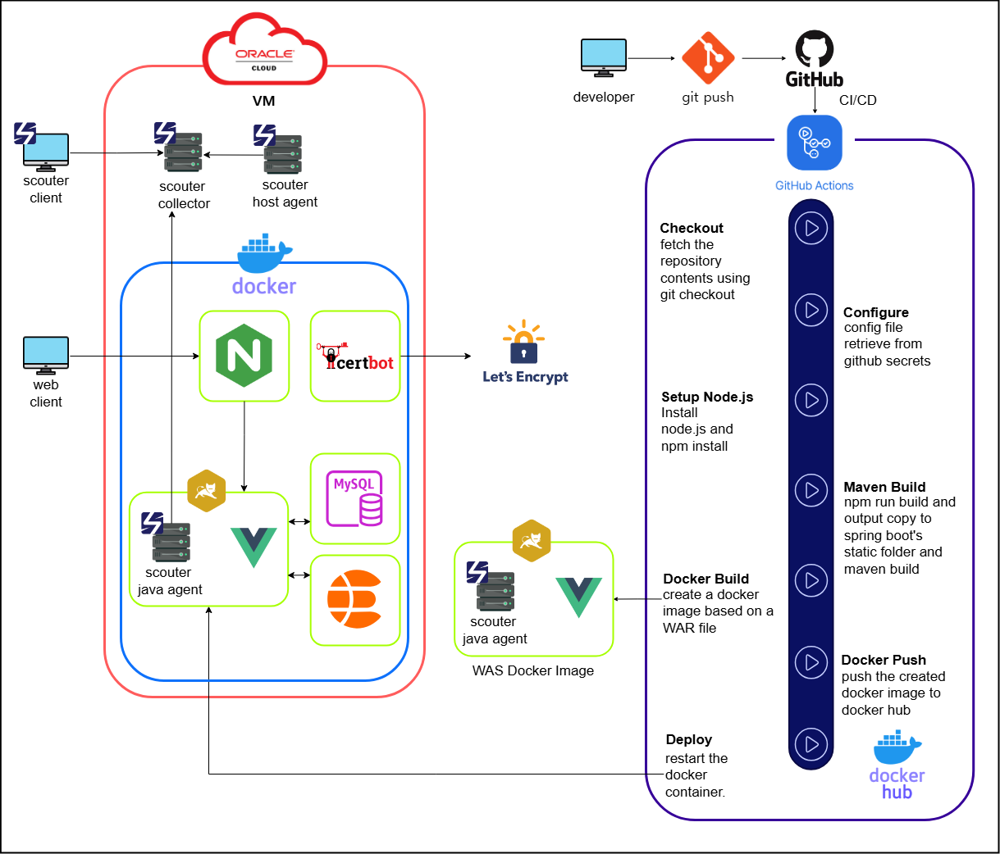

서비스 소개
-
"WIZLQ"는 다양한 분야의 용어를
퀴즈 형태로 등록하여 학습할 수 있는 서비스입니다. -
사용자들은 퀴즈에 답변을 작성하며
서로의 생각을 공유하고 새로운 지식을 쌓을 수 있습니다. -
원하는 퀴즈를 일일 퀴즈로 등록하면
매일 학습하고 기록을 남길 수 있는 일일 퀴즈 기능도 제공합니다.
URL
https://wizlq.comSkills
BackEnd
Spring Boot
Spring Data JPA
Spring Security
JAVA
MyBatis
FrontEnd
Vue.js
jQuery
DB
MySQL
Infrastructure
Oracle Cloud
Docker
Nginx
Github Actions
Scouter
개발 계기
-
어떤 직종에 종사하거나 시험 준비 과정에서
용어를 학습할 필요성을 느낄 때가 많습니다. -
다만 용어의 정의는 사람마다 다르게 생각될 수 있고,
관점에 따라 용어의 뜻이 달라질 수 있습니다. -
이러한 관점과 생각에 따른 용어의 다양한 정의를 한곳에 모으고
단순 암기를 넘어 깊이 있는 학습을 돕고자 WIZLQ를 개발하게 되었습니다.
Service Architecture
